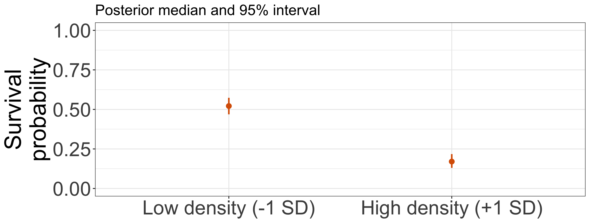

Bayesian statistics for ecology
Day 2: Seedling survival and CNDD
AFEC-X 2026 · 22 October
Masatoshi Katabuchi @ XTBG, CAS
Yesterday’s question, today’s question
Day 1: what is the seedling survival probability?
Day 2: does that probability change with conspecific density?
We keep the binomial model and add a predictor.
Today’s objectives
- Explain the fitted relationship on the probability scale.
- Compare low-density and high-density predictions with intervals.
- Compare model-generated survival data with observations.
Conspecific negative density dependence
CNDD: in today’s example, higher conspecific density goes with lower seedling survival.
Do species differ in this relationship? Could those differences relate to species abundance?
Today we read one common survival curve. Tomorrow we consider group differences.
The data and a prediction

Which way would you expect the fitted curve to go?
The same binomial observation model
s_i \sim \operatorname{Binomial}(n_i,p_i)
- i: a quadrat.
- n_i: number of seedlings, s_i: survivors.
- p_i: survival probability in that quadrat.
Now let conspecific density x_i predict p_i.
A straight line and a probability curve

\operatorname{logit}(p_i)=\alpha+\beta x_i,\qquad
p_i=\operatorname{logit}^{-1}(\alpha+\beta x_i)
Prior scale: a familiar Normal regression
y_i\sim\mathcal{N}(a x_i+b,\sigma)
For these units and ranges, would a slope of 100 make sense?
A candidate slope prior:
a\sim\mathcal{N}(0,2.5)
The second argument is an SD.
The same scale question for CNDD
\operatorname{logit}(p_i)=\alpha+\beta x_i
- Density is measured in standard-deviation units.
- The coefficients describe change on the logit scale.
- Their priors imply survival curves on the probability scale.
Would those curves give plausible survival probabilities in this habitat?
The completed model in Stan
data {
int<lower=0> N;
array[N] int<lower=0> n;
array[N] int<lower=0> suv;
vector[N] cons;
}
parameters {
real alpha;
real beta;
}
model {
suv ~ binomial_logit(n, alpha + beta * cons);
alpha ~ normal(0, 2.5);
beta ~ normal(0, 2.5);
}
- Data: seedlings, survivors and density.
- Unknowns: intercept and density coefficient.
- Assumptions: binomial survival, logit relationship and priors.
binomial_logit uses the straight line on the logit scale.
Did the computation behave well?

Do the chains explore the same range without persistent drift?
Computation diagnostics together
| 1 |
1698.01 |
2123.25 |
0 |
0 |
1.03 |
- R-hat: do the chains agree?
- ESS: how much sampling information do the draws provide?
- Divergences and other sampler warnings: did sampling struggle?
These checks concern computation. We still need to compare the model with ecological data.
A distribution of survival curves

The band describes uncertainty about p at each density. Points are observed proportions and can lie away from the band.
Low density and high density

Compare probabilities at fixed densities. All predictions use the same posterior draws.
Probability uncertainty and future survivors

Both new groups contain 20 seedlings. Even a known probability allows different counts.
Exercise: survival at two densities
day2/exercise-student.qmd · 15 minutes including explanation
- Predict which density has higher survival probability.
- Run the supplied code and read the two probabilities with 90% intervals.
- Explain the result in words.
- Explain why the next survivor count is still uncertain.
What the comparison tells us
Low density: median survival probability 0.52, 90% interval 0.48 to 0.56.
High density: 0.17, 90% interval 0.14 to 0.21.
What ecological sentence would you report with those values?
Model-generated data and the observations
For every posterior draw:
p_i^{(m)}=\operatorname{logit}^{-1}(\alpha^{(m)}+\beta^{(m)}x_i),\qquad
s_i^{\mathrm{rep},(m)}\sim\operatorname{Binomial}(n_i,p_i^{(m)}).
We keep the observed density and seedling count of each quadrat.
What patterns should the model reproduce?
Does the density pattern look compatible?

Look for systematic differences across density.
Does the model reproduce the spread?

What ecological conditions might create more variation than the model predicts?
Interpretation in a real forest
- A fitted association depends on the model and measured conditions.
- Light, soil and shared enemies could matter as well as density.
- Ecological knowledge helps decide which comparisons and checks matter.
What additional information would you want before explaining the mechanism?
Tomorrow: species may differ

Some species have few seedlings. How can we estimate their relationships?
Your research question
Name a response you measure and one predictor you care about.
What would you predict, and which observed pattern would you ask the model to reproduce?
Optional: CNDD prior curves

Are the predicted survival probabilities plausible for this habitat and census period?
Probability differences
p_low <- plogis(draws$alpha-draws$beta)
p_high <- plogis(draws$alpha+draws$beta)
quantile(p_high-p_low,c(.05,.5,.95))
Compute the difference for each paired draw. The comparison holds the two densities fixed.